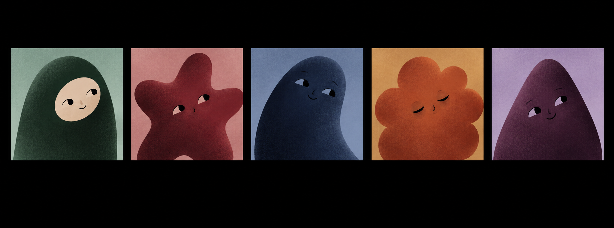
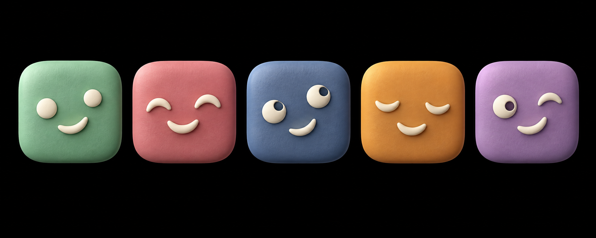

PocketSaga / Profile studies
A familiar little face.
One simple family. A little personality for everyone.
Live shared avatars · circle previews at 48, 32 and 24px. These same characters appear throughout the app.
Earlier explorations

